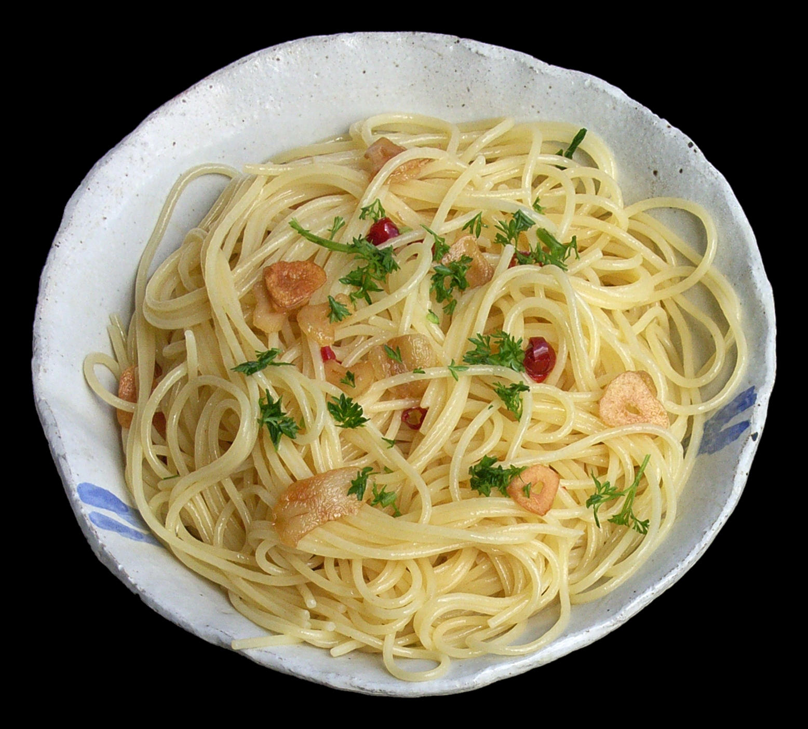

Aglio e Olio

A Brief Description...
Aglio e olio is Italian for "Garlic and Oil", which speaks to the simplicity of the dish. It only requires 3 ingredients: Garlic, Oil, and Pasta.
Ingredients for Aglio e Olio
- Pasta
- Garlic
- Olive Oil
- OPTIONAL: Red Pepper Flakes
Steps
- Cook pasta in a pot of boiling water
- Add salt to the water
- Separately, cut garlic into thin slices
- When pasta is a few minutes away from finished, start heating a pan on a low temperature
- Low can be different depending on equipment. For my gas stove, I set the burner at a 3 out of 10.
- Add oil to the pan
- When oil is hot, add garlic
- Once garlic is fragrant, put finished pasta into the pan
- Stir and toss pasta until liquid is no longer runny
- Add red pepper flakes if desired
- Serve and enjoy!
Home